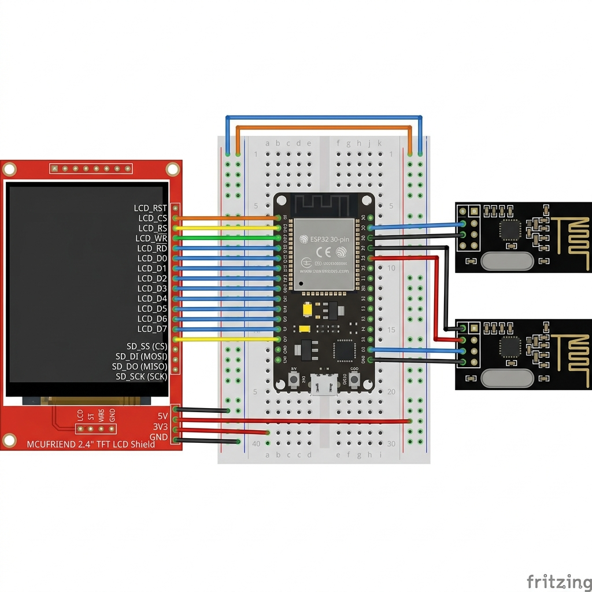

Hardware Wiring Specifications for Dual NRF24L01 + Wi-Fi Promiscuous Sniffer + ILI9341 Touchscreen

The ESP32 uses a single high-speed Hardware SPI bus (VSPI) shared across Radio 1, Radio 2, the TFT Display, and the Touchscreen controller. The internal ESP32 802.11 b/g/n Wi-Fi radio operates concurrently for Wi-Fi scanning, promiscuous EAPOL handshake capturing, and Web Portal serving.
| Signal / Interface | ESP32 GPIO Pin | Connected Modules / Mode | Type |
|---|---|---|---|
| SCK (Clock) | GPIO 18 | Radio 1, Radio 2, TFT Display (SCK), Touch (T_CLK) | SHARED SPI |
| MISO (Master In) | GPIO 19 | Radio 1, Radio 2, TFT Display (SDO), Touch (T_DO) | SHARED SPI |
| MOSI (Master Out) | GPIO 23 | Radio 1, Radio 2, TFT Display (SDI), Touch (T_DIN) | SHARED SPI |
| Wi-Fi Radio (2.4GHz) | Internal Antenna | 802.11 AP/Station Scanning, Promiscuous Sniffer, Web Portal | INTERNAL RF |
| NRF24 #1 Pin | ESP32 Pin | Function | Signal Category |
|---|---|---|---|
| VCC | 3.3V Rail | Power (+3.3V Only) | POWER |
| GND | GND Rail | Ground | GROUND |
| CE | GPIO 22 | Chip Enable | DEDICATED |
| CSN | GPIO 21 | SPI Chip Select | DEDICATED |
| SCK | GPIO 18 | SPI Clock | SHARED SPI |
| MOSI | GPIO 23 | SPI Data In | SHARED SPI |
| MISO | GPIO 19 | SPI Data Out | SHARED SPI |
| NRF24 #2 Pin | ESP32 Pin | Function | Signal Category |
|---|---|---|---|
| VCC | 3.3V Rail | Power (+3.3V Only) | POWER |
| GND | GND Rail | Ground | GROUND |
| CE | GPIO 16 | Chip Enable | DEDICATED |
| CSN | GPIO 15 | SPI Chip Select | DEDICATED |
| SCK | GPIO 18 | SPI Clock | SHARED SPI |
| MOSI | GPIO 23 | SPI Data In | SHARED SPI |
| MISO | GPIO 19 | SPI Data Out | SHARED SPI |
| Shield Pin Label | ESP32 Pin | Function | Signal Category |
|---|---|---|---|
| 5V / 3V3 | 5V / 3.3V Rail | Display Power | POWER |
| GND | GND Rail | Ground | GROUND |
| LCD_RST | GPIO 33 | Hardware Reset | DEDICATED |
| LCD_CS | GPIO 5 | Chip Select | DEDICATED |
| LCD_RS | GPIO 4 | Register / Command Select | DEDICATED |
| LCD_WR | GPIO 2 | Write Enable | DEDICATED |
| LCD_RD | 3.3V Rail | Read Enable (Tie to HIGH) | POWER |
| LCD_D0 | GPIO 12 | Data Bit 0 | PARALLEL BUS |
| LCD_D1 | GPIO 13 | Data Bit 1 | PARALLEL BUS |
| LCD_D2 | GPIO 26 | Data Bit 2 | PARALLEL BUS |
| LCD_D3 | GPIO 25 | Data Bit 3 | PARALLEL BUS |
| LCD_D4 | GPIO 17 | Data Bit 4 | PARALLEL BUS |
| LCD_D5 | GPIO 27 | Data Bit 5 | PARALLEL BUS |
| LCD_D6 | GPIO 14 | Data Bit 6 | PARALLEL BUS |
| LCD_D7 | GPIO 32 | Data Bit 7 | PARALLEL BUS |
| SD_SS (CS) | GPIO 13 | SD Card Chip Select | SPI CS |
| SD_DI (MOSI) | GPIO 23 | SD SPI Data In | SHARED SPI |
| SD_DO (MISO) | GPIO 19 | SD SPI Data Out | SHARED SPI |
| SD_SCK (SCK) | GPIO 18 | SD SPI Clock | SHARED SPI |
| Button / LED | ESP32 Pin | Connection Instructions | Type |
|---|---|---|---|
| TURN ON Button | GPIO 12 | One leg to GPIO 12, other leg to GND | INPUT_PULLUP |
| TURN OFF Button | GPIO 14 | One leg to GPIO 14, other leg to GND | INPUT_PULLUP |
| BOOT Button | GPIO 0 | Built-in BOOT button on ESP32 board | INTERNAL |
| Status LED | GPIO 2 | Built-in LED on ESP32 board | OUTPUT |